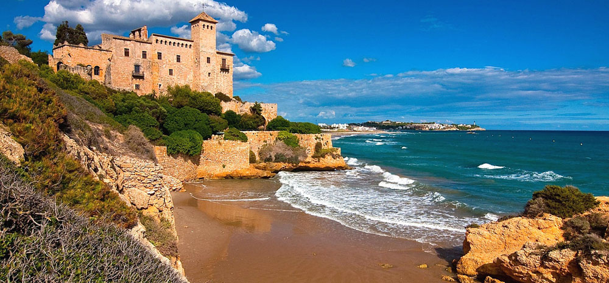
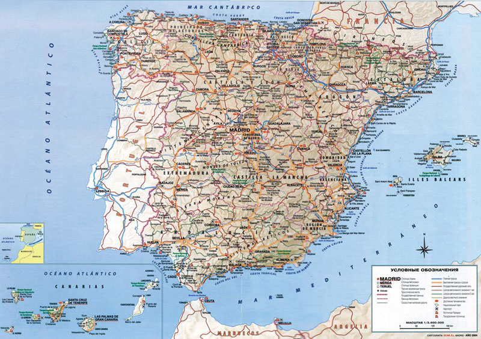

Крупнейшие города:
Мадрид
Барселона
Валенсия
Севилья
Сарагоса
Малага
Официальные языки:
Территория:
51-я в мире
Всего - 505 990 км²
% водной поверхности - 1,04%
Население:
Оценка (2016) - 46 468 102 чел.
Плотность - 92 чел./км²
Названия жителей:
Испанец
Испанка
Испанцы
Валюта:
Евро (EUR)
Испания имеет долгую и красочную историю. Многие государства не раз пытались завоевать эту богатую и плодородную землю. Сегодня интерес к Испании со стороны иностранцев не уменьшился, однако, теперь они едут в королевство, чтобы есть хамон, пить изысканные вина и танцевать фламенко.
Ландшафт Испании очень разнообразный, и благодаря своему географическому положению королевство владеет огромными природными богатствами. Очевидно, что такие земли были лакомым куском для захватчиков. Здесь были финикийцы, а затем греки и карфагеняне. Кельты и римляне также не раз пытались установить на территории нынешней Испании свои порядки.
Мавры взяли королевство под свой контроль в 711 году, и их влияние можно проследить в культурных традициях и архитектуре Испании. Благодаря маврам здесь появилось орошение, цитрусовые и миндальные сады, которые, к слову, по-прежнему играют важную роль в местной экономике и гастрономии. В фермерских регионах можно увидеть множество террас – это также является наследием арабских племен. Прошло несколько столетий, прежде чем христиане смогли вернуть свою землю. Каждый год, во многих городах побережья Коста-Бланка люди отмечают это знаковое событие: проводят фестивали и исторические реконструкции.
После многочисленных вторжений, королевство перешло «в наступление». В XVI веке, под руководством исследователя Христофора Колумба Испания расширила свои владения за счет территорий Центральной и Южной Америки. Благодаря этому, империя стала владелицей не только новых земель, золота и серебра, но и новых растительных культур, таких как картофель, табак и какао.
Очевидно, что завоевания дали толчок не только экономическому росту, но и стремительному развитию культуры Испании. В XVII веке, мир увидел работы великих Эль Греко и Веласкеса, а Сервантес написал свой знаменитый роман «Дон Кихот».
Однако, уже в XIX веке удача отвернулась от королевства. Битва при Трафальгаре, которая окончилась поражением франко-испанского флота, поставила точку в многолетних сражениях Англии и Испании за право первенства, а последняя утратила свою морскую мощь.
Испанская гражданская война 1936-39 годов разделила страну на два лагеря. Аликанте и Мурсия поддержали республиканцев. Лидер националистического движения генерал Франсиско Франко взял под свой контроль королевство в 1939 году. Вплоть до смерти генералиссимуса в 1975 году в стране царила диктатура. Это было горькое время для Испании, тогда погибло около полумиллиона человек.
Сегодня в стране процветает демократия. Сорок лет назад, были созданы 17 региональных правительств, которые аналогичны округам Англии. Они пользуются большой властью, хотя некоторые предпочитают быть полностью самоуправляемыми.
Туризм превратился в огромную индустрию и стал одной из основных составляющих экономики королевства. Миллионы иностранцев посещают Испанию каждый год. И это не удивительно, ведь здесь есть и теплое море, и высокие горы, и древние города и села. Коста Бланка является одним из самых популярных мест отдыха туристов.

Крючкова Вера. IVKHK 2018